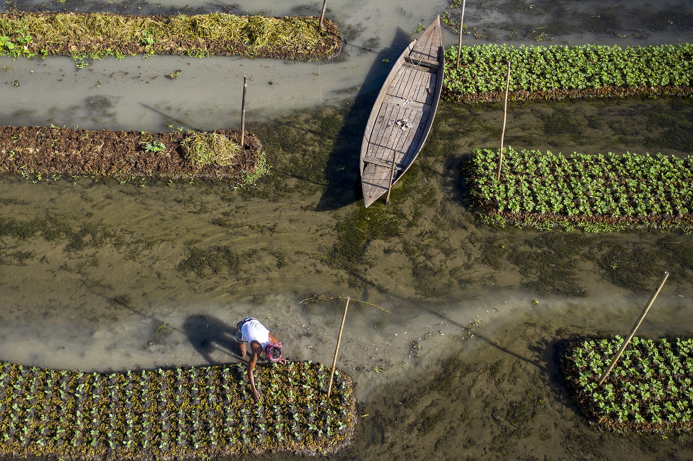
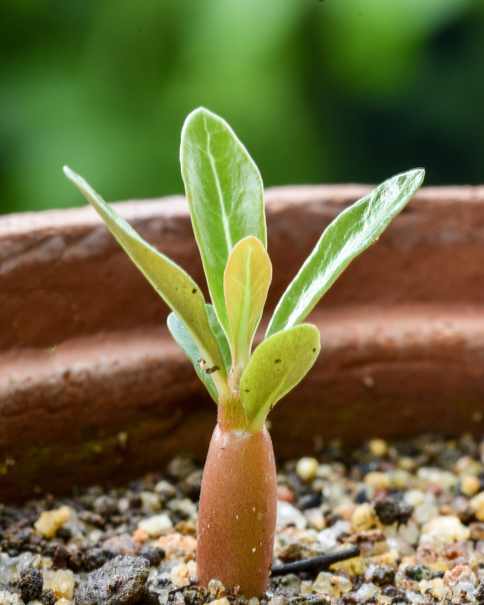
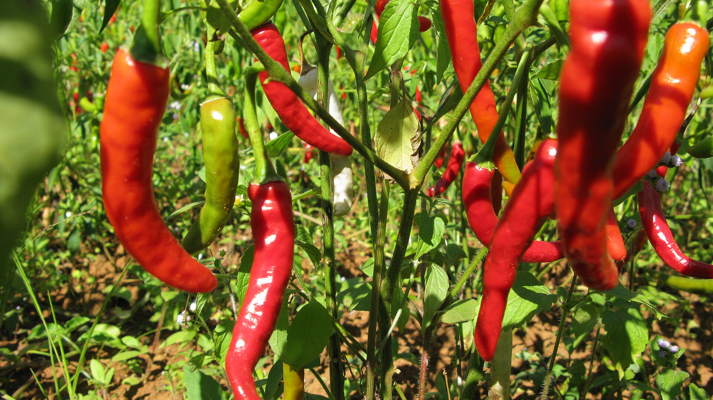

Grow more with less guesswork.
A season-by-season guide to healthy soil, timely planting and fewer pests.

Start with four decisions.
Read the light
Most vegetables want six hours of sun.
Test the soil
A jar test sorts clay from loam.
Build the bed
Work in compost, then stop digging.
Sow on time
Sow by frost dates.
The year, month by month.
Sowing windows shift with your climate.
- Spring
- Sow indoors, transplant later.
- Summer
- Water early, pick often.
- Autumn
- Sow leaves, plant garlic.
- Winter
- Rest beds, plan rotations.
Feed the soil first.
Plants follow the ground they are given.
- Compost
- Finished compost is dark, crumbly and smells of a forest floor.
- Mulch
- A layer of straw or leaves keeps moisture in and weeds down.
- Rotation
- Move each crop family to a different bed the following year.

When something looks wrong.
Read the leaf first, then the watering can.
Yellow leaves
Too much water. Let the soil dry first.
Holes in leaves
Check underneath for aphids and caterpillars. Pick them off by hand.
Flowers with no fruit
Cool nights or a lack of pollinators. Hand-pollinate squash in the morning.
White powder on leaves
Mildew thrives in still air. Improve airflow and remove the worst leaves.
Pick at the right moment.
Harvest often and plants keep producing.

Pick when the skin is firm and glossy.
A short toolkit.
Four tools cover most first-year jobs.
| Tool | What it does | Reach for it when |
|---|---|---|
| Hand trowel | Planting and lifting | Sowing into a bed |
| Garden fork | Loosening soil | Before adding compost |
| Pruning snips | Clean stem cuts | Harvesting herbs |
| Watering can | Water at the root | Dry mornings |